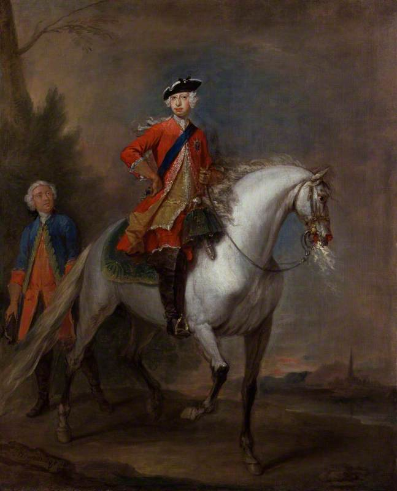

Chapter 2
The King’s Peace and the Mayor’s Watch
The pressure had shifted. London’s physical vulnerability was settled fact: timber, pitch, thatch, the dry summer’s accumulation. What remained to be tested was the machinery of response. Who could act, at what cost, with what certainty? On a September morning in 1666, Lord Mayor Thomas Bloodworth sat at his desk in the Guildhall with a leather-bound precedent book open before him. He was fifty-five, a vintner worth perhaps twenty thousand pounds, rehearsing a decision he hoped never to face. A constable would burst through. A parish beadle would report flames. Then the weight would fall on him alone: the order to pull down houses, to destroy property in order to save it, to gamble his reputation and the City’s treasury against a fire that might outrun any human judgment.
Bloodworth turned the pages. The book spoke of rights and liberties, of jurisdiction against the Crown’s encroachment. It did not say when a mayor should sacrifice the certain value of a standing house for the uncertain hope of stopping flames. Outside, London stirred toward another dry day. The oak desk held only paper, only precedents for deliberation.
The spark would meet this.
—-
The Restoration had built this machinery. When Charles II rode into London on 29 May 1660 (his twenty-ninth birthday, his father’s birthday, the anniversary of his own deliverance), he found a capital that had learned to survive without kings. The City Corporation had persisted through eleven years of suspended monarchy by accommodation and occasional resistance. Its aldermen paid fines rather than accept Cromwell’s purge of their charter. Its merchants financed both sides when necessary. The price of this survival was constant vigilance. Every royal gesture toward the Corporation’s liberties was measured against the possibility of tyranny’s return.
Charles understood the bargain. He needed London’s money. The grant of customs and excise that Parliament had voted him proved, year after year, insufficient. The actual revenue fell short. The court economized, reduced household expenses, sold monopolies. Still the gap yawned. The City could lend, and did. Sir Robert Viner, goldsmith and banker, would advance thirty thousand pounds and more against the security of the Excise. His uncle, Sir Thomas Viner, had been lord mayor in 1653–54, navigating the Protectorate with the same combination of banking and political dexterity. The Viners understood that credit required confidence, and confidence required that the City manage its own affairs without royal interference.
The Corporation managed them through forms that predated the Stuart kings. The Court of Aldermen, twenty-six members including the mayor, governed daily business. The Common Council, larger and more representative, voted subsidies and heard petitions. The livery companies—Vintners, Mercers, Goldsmiths, Drapers—controlled admission to trade and maintained the ritual of medieval regulation. Each ward elected its common councilmen, its constables, its scavengers. Each parish maintained its watch. The whole edifice rested on the assumption that local knowledge, local interest, and local responsibility could contain most disorders without central direction.
Fire threatened this assumption directly. It respected no ward boundaries, no company jurisdictions, no property lines accumulated through centuries of customary right. Yet the response to fire remained stubbornly parochial. The parish engine answered first. The constables summoned the watch. Only when flames spread beyond one parish did the mayor’s authority activate, and even then his powers were unclear. The Rebuilding Act of 1667, passed after the disaster, would try to clarify what 1666 had left obscure: who could order demolition, who would pay, how compensation might be calculated. But in Bloodworth’s September, the mayor faced a vacuum dressed as discretion.
The protocol was specific and personal. Upon alarm of fire, the Lord Mayor rode in state to the scene. He assessed whether the danger warranted extraordinary measures. If he judged that pulling down houses would stop the spread, he gave the order. The order required his physical presence and his personal responsibility. The houses destroyed were valuable property. Their owners would claim compensation. The City might be liable, or the Crown, or no one, depending on whether the demolition was deemed necessary or premature, public-spirited or negligent. The mayor who ordered destruction too soon destroyed his reputation and perhaps his fortune. The mayor who waited too long destroyed the City.
Bloodworth knew this calculus intimately. He had served as sheriff in 1665, the year of plague, when the Corporation’s authority was tested by mortality and the fear of mortality. He had seen how quickly order dissolved when the dead outnumbered the living and the living feared both disease and the restrictions imposed to contain it. The plague had taught him caution, perhaps excessive caution. It had also taught him that the City’s liberties survived only through constant assertion. The Crown’s commissioners for health had tried to extend their reach into London’s parishes. The Corporation had resisted, negotiated, compromised without surrendering principle. Bloodworth had been formed in this school of guarded autonomy.
Now he was mayor, and the dry summer of 1666 had multiplied the risk. The Thames ran low. The wooden houses stood packed together, jettied toward each other across lanes barely wide enough for a cart. The warehouses held oil, hemp, tar, brandy—combustibles that the previous chapter has already described. The City knew its vulnerability. The Court of Aldermen had issued orders, year after year, requiring householders to maintain leather buckets and ladders, to clear their chimneys, to cover their hearths at night. The orders were honored in the breach. The Corporation lacked the staff to enforce them, and Londoners resented the intrusion.
What the Corporation could enforce, it did: the maintenance of its own privileges against any rival claim. In 1666 this meant watching the Crown as closely as the watchmen watched for flames. Charles II had been restored, but restoration was not reconciliation. The Act of Indemnity and Oblivion pardoned most political offenses, yet the memory of regicide and republic remained vivid in both camps. The Cavalier Parliament, elected in 1661, passed the Corporation Act requiring municipal officers to renounce the Covenant and take the sacrament according to Anglican rites. Bloodworth had complied. He was no dissenter, no republican. But he was a Londoner first, and his loyalty to the City was the condition of his loyalty to the King.
The post-Restoration settlement rested on this arrangement: a Crown wary of appearing tyrannical, a Corporation fiercely protective of its revenues and liberties, and between them a zone of negotiated ambiguity where emergencies would theoretically be managed. The system worked well enough for ordinary times. It had no provision for extraordinary ones. The fire would find this gap and widen it into catastrophe.
—-
Samuel Pepys occupied a unique position in this divided system. As Clerk of the Acts to the Navy Board, he lived in Seething Lane within the City walls, yet he served the Crown. His diary records both worlds—Whitehall’s gossip and the City’s commerce, royal indulgence and municipal pride. On 2 September 1666, he would carry the news from one to the other, becoming the hinge on which the response turned. But in the years before the fire, his diary reveals the texture of this divided loyalty without recognizing its danger.
Pepys admired the King. He recorded Charles’s wit, his ease, his surprising competence in naval matters. He also recorded the court’s disorder, its debts, its dependence on London’s bankers. The Navy Board’s work required constant negotiation with the City. Ships were built in Thames yards. Provisions came from London merchants. Credit depended on the goldsmiths’ confidence that the Crown would eventually pay. Pepys moved between these spheres with a clerk’s precision and a connoisseur’s delight, noting who borrowed from whom, who disappointed whom, who retained influence despite obvious failure.
The Navy Board’s offices stood near the Tower, convenient to both river and City. Pepys could walk to the Exchange, to the coffee houses where merchants gathered, to his own house where his wife Elizabeth kept a respectable table. He could also ride to Whitehall, to the court where decisions were made that the City would have to implement or resist. This mobility was rare. Most Londoners stayed in their wards, their trades, their companies. Most courtiers avoided the City except for the Exchange or the theater. Pepys crossed the boundary daily, and his diary became the record of what each side failed to understand about the other.
What the Crown failed to understand was the City’s capacity for obstruction. The Corporation could not defy a direct royal command, but it could delay, qualify, reinterpret. The aldermen could absent themselves from meetings. The Common Council could vote subsidies too slowly. The livery companies could enforce their regulations with sudden strictness against royal favorites. Every royal request for money or cooperation entered this machinery and emerged, if it emerged at all, in altered form.
What the City failed to understand was the Crown’s fundamental weakness. Charles II commanded the army and navy in theory. In practice, both were underpaid, undersupplied, and unreliable. The militia existed on paper. The trained bands were companies in name only. In a genuine emergency—a foreign invasion, a popular rising, a fire beyond the parishes’ control—the Crown had no force ready to deploy. The Duke of York, Charles’s brother and heir, would prove this in September, riding through burning streets with soldiers who had to be borrowed, improvised, begged from neighboring counties.
The fire would expose this mutual dependence and mutual suspicion in the harshest light. Bloodworth would refuse James’s offered soldiers, insisting on his own authority. Charles would criticize the mayor’s failure while depending on City credit to rebuild. The parliamentary inquiry would blame no one conclusively, because blame would require acknowledging that the system itself had failed. And the system was the price of the Restoration, the settlement that had ended civil war by distributing power so widely that no one could concentrate it in an emergency.
—-
The specific weight of the mayor’s office fell on the question of pulling down houses. The decision was legal, financial, and political at once; it touched every interest in the City and reached toward the Crown itself.
The law was unclear and remained so. The common law recognized a right of self-preservation that might justify destroying property to save greater property. But who determined the proportion? The mayor’s judgment was subject to review, to lawsuit, to parliamentary complaint. The Corporation’s records show repeated attempts to clarify the procedure: to establish that demolition ordered by proper authority created no liability, to secure royal confirmation of the City’s powers in emergencies, to fix some boundary between necessary destruction and negligent waste. These attempts produced no definitive settlement. Each fire was sui generis, each mayor’s decision a gamble with consequences that might pursue him for years.
The financial risk was concrete and immediate. A house in the City might be worth hundreds of pounds, its contents as much again. The owner might be a wealthy merchant with influence at court, capable of petitioning the King or sponsoring a pamphlet. Or the owner might be a widow with her sole capital invested in the lease, her only security against destitution. Destruction without compensation was ruin. Compensation without clear source was impossible. The City had no fire insurance, though schemes were being discussed in the coffee houses, and no reserve fund for emergencies. The Crown’s finances were, as always, precarious. The liability hung in the air, unassigned, a sword above every mayor’s decision to destroy or to wait.
Bloodworth’s background made him acutely sensitive to these uncertainties. He was not a soldier trained to accept destruction as the price of victory, to weigh lives against terrain and make the calculation without looking back. He was a vintner, a trader in a commodity that required careful storage, gradual maturation, protection from sudden temperature change and loss. His wealth had accumulated through patience, through credit relationships sustained over years, through avoidance of the catastrophic gamble. The mayor who pulled down houses too soon was making exactly such a gamble, staking his reputation and the City’s treasury against a fire that might, after all, be contained by ordinary means.
The political risk compounded the financial. The Corporation’s liberties included the right to manage its own affairs without royal interference. A mayor who called for Crown troops, who accepted the Duke of York’s soldiers, who allowed Whitehall to direct operations in the City’s streets, would be accused of surrendering ancient privilege for temporary convenience. His fellow aldermen would remember the betrayal. The Common Council would censure. The livery companies would find another candidate when his term ended. Bloodworth had risen through this system over decades. He understood its rewards and its punishments with equal clarity.
The watch system that should have supported him was inadequate to the scale of risk. Each ward maintained constables and watchmen, but their numbers were small, their training minimal, their equipment often defective or missing. The serious engines—pumps capable of throwing water above the first floor—belonged to parishes or to private subscribers, not to the Corporation centrally. There was no standing fire brigade, no chain of command that could coordinate response across ward boundaries, no communication system faster than a man running through crowded streets. The mayor’s authority was theoretically supreme in a major fire, but practically dependent on local cooperation that might or might not be forthcoming, on engines that might or might not work, on watchmen who might or might not stay at their posts when flames approached.
Here stood the Liability Wall: not a single barrier but a series of them—legal, financial, political, administrative—each reinforcing the others to create a system designed for hesitation rather than decisive action. The mayor who would order demolition needed certainty that the fire could not otherwise be stopped, certainty that his order would be supported by the Corporation and the Crown, certainty that compensation would somehow be arranged without bankrupting the City or himself. In the absence of such certainty, the rational course was to wait, to hope that parish engines and bucket brigades would suffice, to delay the irrevocable step until the flames themselves forced the decision and removed the burden of choice.
Bloodworth would be condemned for this rationality. When first informed of the Pudding Lane fire, he was reported to have dismissed it as something a woman might extinguish with her own water. The words read as incompetence or indifference, and they have pursued him through history. The quotation appears only in hostile sources, possibly invented after the fact to justify the disaster’s scale and to fix blame on a convenient target. But the sentiment it attributes captures something true: the mayor’s initial assessment that this was an ordinary fire, manageable by ordinary means, not yet requiring extraordinary destruction. The assessment was catastrophically wrong. It also came from a system that trained him to make it—a system that punished premature action more severely than delayed response and distributed responsibility so widely that no one could act with confidence.
—-
The King’s peace depended on this system working well enough for ordinary times. Charles II had no desire to quarrel with his capital. The City supplied his credit, his entertainments, his passage between Whitehall and the sea. The Corporation’s loyalty, however conditional, was preferable to the open resistance that had greeted his father in 1642. The Crown’s proclamations emphasized cooperation, mutual assistance, the common good. They did not clarify who would pay when the common good required destroying private property.
The proclamation of 1665, issued during the plague, illustrated this persistent ambiguity. It ordered strict quarantine, the sealing of infected houses, the prohibition of assemblies that might spread contagion. It did not resolve who would feed the sealed families, who would compensate the owners of destroyed goods, who would judge whether the restrictions were proportionate to the danger. The City and the Crown exchanged letters, accusations, proposals. The plague burned itself out, as plague eventually did, leaving the jurisdictional questions unsettled for the next emergency. The next emergency would arrive with a different physics entirely.
Charles’s own movements revealed the tension between royal authority and municipal autonomy. He hunted at Newmarket, sailed at Chatham, visited his mistresses at various country seats. He was not a monarch who micromanaged municipal administration or inspected parish engines. Yet when crisis came, he expected to be informed promptly, consulted properly, obeyed absolutely. The distance between his expectations and the City’s procedures would widen dangerously in September 1666. Bloodworth would delay reporting to Whitehall, believing the matter still local and containable. Pepys would carry the first reliable news, and his news would be hours old, already overtaken by events that moved faster than horses could ride.
The Duke of York, James, was more actively concerned with London’s security and less patient with its forms. As Lord High Admiral and a man of military temperament, he distrusted the Corporation’s capacity for decisive action. He had his own following in the City, men who looked to court patronage rather than company tradition for advancement. When the fire broke, he would ride personally to organize demolition, accepting the authority that Bloodworth hesitated to exercise or delegate. The brothers’ different styles—Charles’s relaxed confidence that order would restore itself, James’s interventionist urgency—would both prove inadequate to the speed of combustion. The fire would not wait for consultation between Whitehall and the Guildhall.
—-
Pepys’s diary for the years before the fire records this atmosphere of accumulated risk without fully recognizing its implications. He noted the dry weather, the small fires that broke out and were contained, the general sense that London’s wooden heart was vulnerable to the spark and the ember. He also noted the court’s financial embarrassments, the Navy’s unpaid debts, the City’s grumbling compliance with royal requests that always seemed to exceed the Crown’s capacity to reciprocate. The two registers—physical risk and political friction—ran parallel in his analysis without converging. They would converge suddenly and catastrophically on 2 September.
His position as Clerk of the Acts gave him perspective that few others shared. He saw the Navy’s stores, the piles of hemp and tar and timber accumulated against the Dutch threat, and he knew how readily such materials burned once ignited. He saw the City’s warehouses, similarly stocked, similarly vulnerable, similarly concentrated in districts where the buildings pressed together and the water supply was uncertain. He understood that war and commerce had made London a depot for combustibles, and that the depot was housed in structures designed for an earlier, slower age when fires could be walked to and contained. This understanding did not lead him to predict disaster. Like Bloodworth, like Charles, like almost everyone who had watched previous fires burn out or be contained, he assumed that the existing arrangements would suffice until they demonstrably failed.
The demonstration would be brutal and swift. The fire that started in Thomas Farriner’s bakehouse would spread faster than any messenger could ride, faster than any order could be formulated and transmitted through the layers of precedent and permission. The system of deliberation, of mayoral assessment and Corporation consent and royal coordination, required time that the flames would not grant. Bloodworth’s hesitation at the Guildhall, his turning of precedent book pages, his weighing of compensation against destruction—all this would become irrelevant when the fire itself began pulling down houses, indifferent to legal authority, creating firebreaks by its own logic of consumption and loss.
Yet defenders of this system existed then and later; their arguments were not frivolous. The Corporation’s records showed due diligence in ordering precautions that householders ignored; mayors had contained previous fires by exercising their authority properly; royal reluctance to override municipal autonomy preserved liberties that made London prosperous and creditworthy. Each proposition held true; each contributed to catastrophe. The fire tested more than wind and drought and combustible materials; it tested governance itself—the gap between distributed authority and concentrated emergency—and found it wanting.
—-
Bloodworth left no account of his morning at the Guildhall, no memoir to explain or justify his choices. We know his position, his wealth, his company affiliation, the precedents that bound him and the uncertainties that paralyzed him. We can reconstruct the choice he faced when the alarm came, the calculations that led him to ride to Pudding Lane and then, crucially, to return. He judged the fire containable by ordinary means. He preserved his authority unshared with Crown or military. He protected, for a few more hours, the property that demolition would have destroyed. The cost of this protection was the City itself, and his own reputation as its guardian.
The fire would meet not a man but a system: the Corporation’s ancient forms, the Crown’s recent caution, the settlement that had ended civil war by making emergencies difficult to recognize and harder to meet. The spark was waiting in Pudding Lane, in the ordinary operations of a baker’s oven, in the materials and habits of a city that had grown too fast for its own safety. What would happen when that spark found the tinder of wooden London, and when the first alarm reached a mayor trained to hesitate, would turn a local accident into a test of governance that neither Bloodworth nor Charles nor the Corporation they represented could pass.
